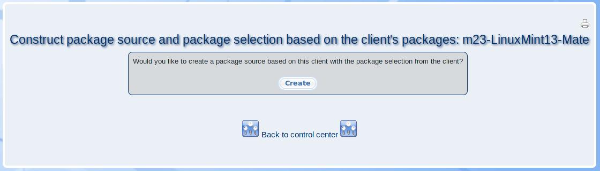

In this dialogue, you can create a package source which contains all packages that are installed on the client. Additionally, a package selection will be created which contains the corresponding package names.

The package source and the package selection naming follows the pattern ''Build_from_client_name''.
root
2019-07-18